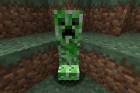

creeper

El creeper es una criatura hostil común que se acerca sigilosamente al jugador y explota, destruyendo el entorno y dañando tanto al jugador como a otras criaturas dentro del radio de la explosión. Debido a su aspecto y peculiares características, el creeper es considerado un icono de Minecraft.
Los creepers persiguen a cualquier jugador dentro de un radio de 16 bloques. No atacan voluntariamente a ninguna otra entidad a menos que sea atacado previamente por una.
Cuando se encuentra a 3 bloques de un jugador, el creeper dejará de moverse, sisea, parpadea y se expande y explota después de 1,5 segundos, destruyendo bloques en el área y dañando significativamente al jugador. La detonación de un creeper se puede detener si el jugador abandona el radio de explosión, incluso si lo derriba, se sale de la vista del creeper o si el creeper muere antes de la explosión. La distancia con el jugador a la que un creeper cancela su explosión es mayor en las dificultades más altas. Las explosiones de creepers normales tienen un poder de 3. El creeper explota solo si tiene una línea de visión ininterrumpida con el jugador durante toda la cuenta regresiva de 1.5 segundos. Como resultado, si el creeper no tiene línea de visión con el jugador, no comienza a sisear incluso a corta distancia, incluso si el jugador lo está atacando, y se cancela una detonación si ha comenzado. El sonido del siseo se reproduce en su totalidad independientemente de si la explosión ocurre o no.
A diferencia de la mayoría de las entidades, el creeper no tiene un sonido inactivo, ni tiene sonidos de pasos únicos. Aunque emite sonidos normales de pasos y nado, es difícil para el jugador distinguirlos de los sonidos que ellos mismos emiten. Esto hace que el acercamiento de un creeper a un jugador desprevenido sea difícil de notar hasta que comienza a sisear. un creeper salta hacia un jugador si puede sobrevivir a la caída. Los creepers comienzan la cuenta regresiva de 1.5 segundos antes de caer, por lo que se produce una explosión antes de aterrizar con caídas más altas.